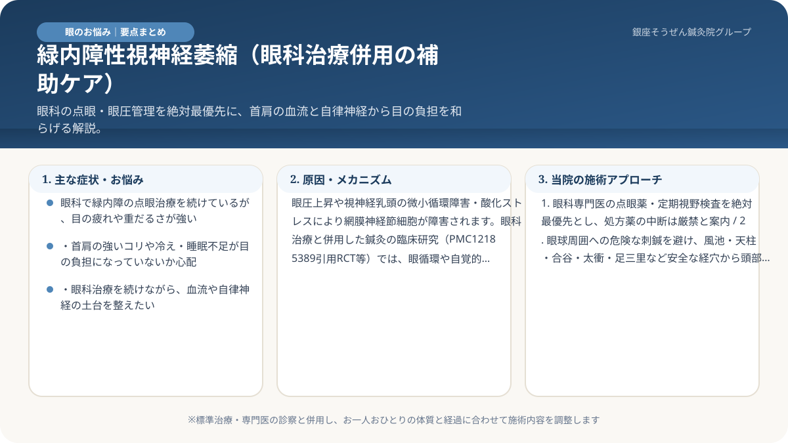

緑内障性視神経萎縮（眼科治療併用の補助ケア）の鍼灸
眼科の点眼・眼圧管理を絶対最優先に、首肩の血流と自律神経から目の負担を和らげる解説。
まず知っておきたい要点と改善の流れ

眼圧上昇や視神経乳頭の微小循環障害・酸化ストレスにより網膜神経節細胞が障害されます。眼科治療と併用した鍼灸の臨床研究（PMC12185389引用RCT等）では、眼循環や自覚的疲労感への補助効果が検討されています（眼圧降下点眼の代替にはなりません）。（出典文献）
このようなお悩みはありませんか？
- ✓眼科で緑内障の点眼治療を続けているが、目の疲れや重だるさが強い
- ✓・首肩の強いコリや冷え・睡眠不足が目の負担になっていないか心配
- ✓・眼科治療を続けながら、血流や自律神経の土台を整えたい
当院の施術アプローチ・改善の流れ
なぜ鍼灸で改善へ向かうのか？（作用機序の図解）
緑内障性視神経萎縮（眼科治療併用の補助ケア）に対する鍼灸は、後頸部〜眼周囲の微小循環と毛様体筋・自律神経調整機序を通じて、お体本来の回復力を引き出します。

眼球周囲の危険な深刺しを避け、風池・天柱・合谷・太衝など安全な経穴へ繊細に施術します。
PC・スマホ作業や緊張で固まった首深層筋と眼輪筋周囲の血流を促し、重だるさを軽減します。
交感神経優位による目の乾き・ピント調節疲労を鎮め、涙液分泌とリラックス反応を助けます。
眼科の点眼・定期検査を最優先としつつ、日々の眼精疲労や頭痛・肩こりの連鎖を整えます。
院長YouTube解説・関連動画
緑内障・視神経ケアの眼周囲・全身血流ツボ図解
実際の施術ではお一人おひとりの体質・症状に合わせて選穴しますが、緑内障・視神経萎縮・眼圧負担の眼科標準治療併用サポートの臨床でよく用いられる代表的なツボの目安です。

📌 代表的なツボの詳細一覧表を開く（6穴） ▼
| ツボ名 | 位置の目安 | 主な狙い | セルフケアの注意点 |
|---|---|---|---|
| 攅竹（さんちく） | 眉頭の内側の小さなくぼみ | 眼輪筋・前頭筋の緊張緩和と眼周囲血流サポート | 眼球自体は絶対に圧迫しないよう骨の縁を優しく押します。 |
| 睛明（せいめい） | 目頭のやや上、鼻の付け根のくぼみ | 眼窩周囲の微小循環サポート | セルフでは強く押さず、専門施術に委ねる繊細な部位です。 |
| 太陽（たいよう） | こめかみのくぼみ（目尻と眉尻の中間後方） | 側頭部の緊張緩和・眼精疲労や頭痛の軽減 | 指の腹で円を描くように優しくほぐします。 |
| 風池（ふうち） | 後頭部の生え際のくぼみ | 視神経・後頭葉へつながる頭頸部血流のサポート | 首こりの解消が眼の疲れ軽減に直結します。 |
| 合谷（ごうこく） | 手の甲、親指と人差し指の間 | 眼周囲の緊張を遠隔から緩める基本穴 | 眼科の点眼治療・視野検査を必ず継続してください。 |
| 太衝（たいしょう） | 足の甲、親指と人差し指の骨の間 | 東洋医学で「目と深い関わり」を持つ肝経の調整穴 | 自律神経の緊張を鎮め、眼への負担を和らげます。 |
国際査読論文の科学的エビデンス
国際的な医学データベース（PubMed・Cochrane等）で報告されている緑内障・視神経萎縮・眼圧負担の眼科標準治療併用サポート領域の代表的な査読済み鍼灸研究をまとめています（標準治療との併用や研究上の限界を含めて正確に掲載）。
📚 査読論文データ・PubMed出典リンクを開く（4件） ▼
| 年・研究デザイン | 対象・規模 | 主な結果 | 限界・出典 |
|---|---|---|---|
| 2024年 メタ解析 | ドライアイ 16試験（n=1,383：人工涙液併用） | BUT（SMD 1.25, P<0.0001）、シルマー試験（SMD 1.55, P<0.0001）、角膜染色・総有効率（OR 4.09）が有意改善。 | 自覚症状OSDIは有意差なし（P=0.15）。人工涙液との併用評価。 Medicine (PMID: 38181299) |
| 2019年 二重盲検RCT | ドライアイ 49名（米国・6か月追跡） | 実鍼群はOSDIスコアが1週〜6か月まで有意改善（6か月p<0.01）、乾燥感・充血も有意軽減。 | 小規模・客観的涙液指標（TBUT等）は有意差なし。 Clin Ophthalmol (PMID: 31114151) |
| 2020年 Cochraneレビュー | 緑内障・高眼圧症 3 RCTs（n=137） | 一時的な眼圧低下の報告はあるが8週時点で差消失、視力は有意差なし。 | 全試験が高バイアス・確実性非常に低。点眼治療の代替不可。 Cochrane (PMID: 32032457) |
| 2025年 メタ解析 | 変性眼疾患 21研究（緑内障・黄斑変性等） | 総有効率はOR 3.52（p<0.00001）だが、統合視力（p=0.50）・眼圧（p=0.11）に有意差なし。 | 非ランダム化研究含む。眼科標準管理下での補完研究段階。 Complement Ther Med (PMID: 40850524) |
参考文献・出典
- 一次論文・公的出典：緑内障性視神経萎縮（眼科治療併用の補助ケア）の根拠文献
- 2024年 メタ解析（ドライアイ 16試験（n=1,383：人工涙液併用））— Medicine (PMID: 38181299)
- 2019年 二重盲検RCT（ドライアイ 49名（米国・6か月追跡））— Clin Ophthalmol (PMID: 31114151)
- 2020年 Cochraneレビュー（緑内障・高眼圧症 3 RCTs（n=137））— Cochrane (PMID: 32032457)
- 2025年 メタ解析（変性眼疾患 21研究（緑内障・黄斑変性等））— Complement Ther Med (PMID: 40850524)
よくある質問（FAQ）
Q. 緑内障の目薬をやめても良いですか？▼
Q. 急な強い目の痛み・かすみ・頭痛・吐き気が出たときは？▼
あわせて読まれる関連疾患（眼のお悩み）
黄斑部に血漿成分が漏れ出し嚢胞状のむくみが生じる病気です。眼科での標準治療を最優先に、安定期の疲労・体調を支えます。
白目やまぶた裏の粘膜が炎症を起こす病気です。感染性は眼科受診を最優先に、アレルギー性の体質・免疫バランスを整えます。
片眼の外傷や手術後に健常眼にも自己免疫性炎症が生じる重篤疾患です。眼科治療最優先で安定期の補完ケアを支えます。
角膜にアミロイドが沈着し強いまぶしさや異物感が生じる指定難病です。眼科治療最優先で安定期の疲労や首肩こりを支えます。
遺伝性に黄斑部の視機能が低下する指定難病の総称です。眼科専門医での管理を最優先に、安定期の眼精疲労や首肩こりをケアします。
片眼に発作的な眼圧上昇と軽度の炎症を繰り返す続発緑内障です。発作時は眼科治療が必須で、寛解期の体調管理を支えます。
CLINICAL RECOVERY CASES
✨ 実際の臨床改善事例・回復経過を見る
銀座本院をはじめ各院での実際の改善事例を症状別に絞り込んでご確認いただけます。
おひとりで悩まず、まずはご相談ください
銀座本院・川口・大宮・横浜・博多・田無の各院でご予約を承っております。